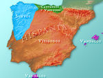

De: La Frikipedia, la enciclopedia extremadamente seria.
De: La Frikipedia, la enciclopedia extremadamente seria. De: La Frikipedia, la enciclopedia extremadamente seria.
| De la serie imperios antiguos: | |||||
| Reino Suevo | |||||
| |||||
| Lema: Mata y cultiva la tierra | |||||
| Himno: ¡Viva el Minifundio!
| |||||
| 
| |||||
| Capital(es) | ¿Cual de ellas? | ||||
| Mayor ciudad | Braga | ||||
| Lenguas oficiales | Swahili y Gallego-portugués | ||||
| Religión oficial | | ||||
| Gobierno | Caciquismo | ||||
| Chef | Bueh... si te cuento no termino hoy | ||||
| Fecha de fundación | Justo antes de caer el Imperio Romano | ||||
| Caída | Cuando el reino visigodo emigró a España | ||||
| Edad de oro | Cuando fundaron una universidad en Mérida | ||||
| Periodo de Estancamiento o reseción | Cuando se hicieron católicos | ||||
| Máxima Extensión | {{{máxima extensión}}} | ||||
| Forma de economía | Capitalista extensiva minifundista | ||||
| Estados que se despacho | Península Ibérica y diversos desaguisados a lo largo de Europa | ||||
| Población calculada | Muchos y muy silenciosos (por eso no los echaban) | ||||
| Moneda | Las bragas | ||||
| Zona horaria | {{{zona_horaria}}} | ||||
| Legado(s) | Estudiantes de Bellas Artes, minifundio y burdeles finos | ||||
| ¿Por que se vino abajo? | Cuando les dieron asilo a los celtas de Gran Bretaña que trajeron costumbres raritas... | ||||
| | |||||
El reino suevo fue el primer reino que se separa del Imperio Romano y acuña su propia moneda. Los suevos fueron unos inmigrantes ilegales de los Pueblos Germánicos que querían dejar ser bárbaros y ser como los romanos (pero sin pagar impuestos) que allá por el siglo V inventaron el movimiento sionista. Así, su estilo de vida se basaba en ir okupando países enteros y expulsando o esclavizando a la población anterior.
Este espíritu o Volkgeist, les guió por toda Europa, primero fundaron Hispania (España/Portugal, que aún no existían). La presión política, junto con la propaganda y algunos actos terroristas contra altos mandos militares romanos hicieron que el Emperador romano Honorio firmase con ellos un Convenio Colectivo de Ocupación y así los legionarios romanos dejaron a los palestinos, perdón, a los hispanos, bajo la dominación germánica.
Los suevos enseguida invadieron Galicia, País Llionés, Asturies y medio Portugal para poder hacerse su propio país. Pusieron la capital en Braga (para poder ir en bragas los muy pervertidos) y comenzaron a cultivar como locos las tierras que les habían tocado en suerte. Pronto inventaron varios Eroski y todo a cien, ya que el Imperio Romano no les cobraba impuestos. Al ver esto, los hispanos del norte se pasaron a la casilla de "Suevos" en la declaración de la Renta. Los auténticos suevos aprovecharon, dieron un golpe de estado en Lugo y se hicieron con el poder, fundando el reino suevo.
Exultantes de alegría hispanos, galaicos, astures y suevos formaron un ejército y comenzaron a invadir el resto de la Península Ibérica para echar del todo a los romanos. Estos se acojonaron tanto que llamaron a los visigordos para que les sacaran las castañas del fuego, así que enviaron unos cuantos miles de inmigrantes visigodos para que reinvadiesen Hispania en nombre del Imperio Romano, y sacasen de allí a los suevos, alanos, bizantinos y vascones. Sin embargo los visigordos al llegar allí comenzaron también a invadir tierras para su propio reino.
El emperador Honorio harto de tanto militar incompetente mandó a sus mejores embajadores a Hispania. La diplomacia romana eran tan sutil que en dos visitillas a suevos y visigodos consiguió que éstos comenzasen a pelearse entre sí y así los romanos se ahorraron tener que enviar más legiones.
Finalmente el reino suevo sucumbió ante el reino visigodo, ya que éstos llevaban como auxiliares varias unidades tácticas de moros.
Durante los miltropecientos años que duró el reino suevo sus reyes mandaron traer varios misioneros cristianos para ver si podían calmar a la población, debido a que el reparto de tierras y las leyes de arrejuntamiento sersual eran vistos como injustas por el resto de la población y hubo muchas rebeliones internas. Por otro lado el reino suevo tuvo que auxiliar a los celtas que huían de Gran Bretaña ante la llegada de los anglosajones a su isla, y como sus costumbres no eran las mismas se produjo una macedonia de culturas que aquello ya parecía Babilonia.
El resultado fue que se inventó el iberismo y las romerías gallegas: actos paganos litúrgicos en los cuales se juntaba todo el mundo en lo alto de un monte para rezar, hacer botellón y follar entre los matojos. Otro lindo invento fue el de la emigración a Castilla, Cuba, Argentina, Alemania y Suiza a través de los siglos, de hecho las romerías eran para que el dios Bandua hiciese nacer a los niños con una maleta bajo el brazo.
Uno de los misioneros vaticanos que llegaron al reino fue Santiago Zedebeo, más conocido como Santiago el Hijo del Trueno, por sus archifamosas pedorretas tan largas que se ponía a tocar muiñeiras. Este señor llegó a Lisboa y desde allí comenzó a predicar el amor a uno mismo y las dádivas a los curas, para que todo el mundo dejase de gastar pasta en fumar, alcohol y putas para amarse a sí mismo y su body y diese el dinero a los curas para que estos pudiesen levantar grandes monasterios y catedrales unos siglos más alante. Pero a Santiago le salió un competidor llamado Prisciliano con el cual tuvo muchas trifulcas y grandes broncas por todas los pueblos de Galicia, hasta que Santi se cansó y le mandó la Santa Inquisición encima. Para conmemorar tan bonito acto de poder se fue a la provincia da Coruña y fundó una catedral en su honor en Compostela entre las ruinas de un cementerio lleno de góticos.
Autor(es):